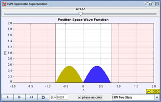
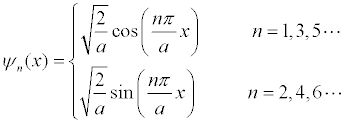
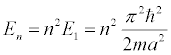

[Screen shot of the energy eigenfunction describing the ISW first-excited state.]
The infinite square well (ISW) is an idealized model consisting of a point mass m inside an infinitely deep well of width a.
According to quantum mechanics, the energy eigenfunctions ψn(x) for a symmetric ISW are simple sinusoidal functions
.
The corresponding energy eigenvalues En scale as the principal quantum number n squared
.